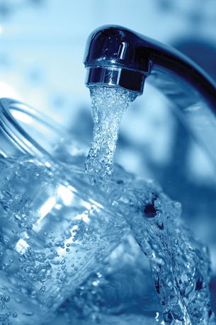

Module 4—Properties of Solutions
 Big Picture
Big Picture

© Tommy Maenhout/shutterstock
Tap water is a critical component of your day-to-day life. You probably use far more water than you think. According to Environment Canada, the average Canadian household uses 335 L of water per day. The uses for water are broken down as follows:
35% bathing and showering
30% flushing the toilet
20% laundry
10% drinking and kitchen chores
5% cleaning
When you turn on the tap to fill a glass with water, you have certain expectations for what comes out. If the water is coloured or smells foul, you would likely suspect that something is present in the water that you do not want to consume. What is present in tap water? Why is it there? What substances were removed during its processing? You may have heard that Canadian drinking water is among the safest in the world, but are you aware of how water is treated and monitored?
In this module you will study the processes involved with bringing drinking water from a natural source, such as a river, to your home. You will also study how water is able to form solutions with many substances.
This module will focus on the big questions:
- What is a solution?
- Why are solutions often used to study chemical systems?
As you complete each lesson in this module, you will investigate the following essential questions:
- What is a solution?
- What kind of mixture is a solution?
- How did Arrhenius contribute to the understanding of electrolytes, acids, and bases?
- What does it mean to dissolve a substance?
- What role does energy have in the dissolving of a substance?
- How can you predict the solubility of a substance in water?
- How is dynamic equilibrium involved when studying a saturated solution?
- How is solution concentration expressed?
- How do you calculate amount concentration and determine concentration of species in a solution?
- How are solutions prepared?
As a citizen you will consume tap water for many years to come. You may become interested in questions such as “What is in the water?” and “How much is able to be made available?”